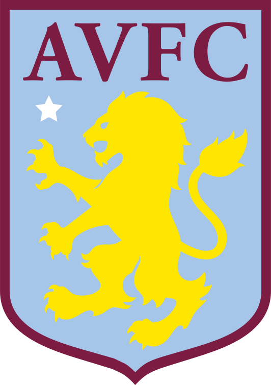

epl 분데스리가


월요일 화요일


수요일 목요일 금요일

토요일 일요일

| epl | 분데스리가 | 라리가 | |||||||||||||||||||
|---|---|---|---|---|---|---|---|---|---|---|---|---|---|---|---|---|---|---|---|---|---|
| 순위 | team | 경기 수 | 승점 | 승 | 무 | 패 | 순위 | team | 경기수 | 승점 | 승 | 무 | 패 | 라리가 | 순위 | team | 경기수 | 승점 | 승 | 무 | 패 |
| 1위 | |
6경기 | 18점 | 6승 | 0무 | 0패 | 1위 | |
5경기 | 13점 | 4승 | 1무 | 0패 | ||||||||
| 2위 | |
6경기 | 16점 | 5승 | 1무 | 0패 | 2위 | 5경기 | 13점 | 4승 | 1무 | 0패 | |||||||||
| 3위 | 6경기 | 15점 | 5승 | 0무 | 1패 | 3위 | |
5경기 | 12점 | 4승 | 0무 | 1패 | 4위 | 6경기 | 14점 | 4승 | 2무 | 0패 | 4위 | |
5경기 | 12점 | 4승 | 0무 | 1패 |
| 5위 | 6경기 | 14점 | 4승 | 2무 | 0패 | 5위 | 5경기 | 12점 | 4승 | 0무 | 1패 | ||||||||||
| 6위 |  | 6경기 | 14점 | 4승 | 0무 | 2패 | 6위 | |
5경기 | 11점 | 3승 | 2무 | 0패 | ||||||||
| 7위 | |
6경기 | 10점 | 3승 | 1무 | 2패 | 7위 | |
5경기 | 9점 | 3승 | 0무 | 2패 | ||||||||
| 8위 | 6경기 | 9점 | 3승 | 0무 | 3패 | 8위 | |
5경기 | 7점 | 1승 | 4무 | 0패 | |||||||||
| 9위 | |
6경기 | 9점 | 3승 | 0무 | 3패 | 9위 | |
5경기 | 7점 | 2승 | 1무 | 2패 | ||||||||
| 10위 | 6경기 | 14점 | 2승 | 2무 | 2패 | 10위 | |
5경기 | 6점 | 2승 | 0무 | 3패 | |||||||||
| 11위 | 6경기 | 8점 | 2승 | 2무 | 2패 | 11위 | |
5경기 | 6점 | 2승 | 0무 | 3패 | |||||||||
| 12위 | |
6경기 | 7점 | 2승 | 1무 | 3패 | 12위 | 5경기 | 5점 | 1승 | 2무 | 2패 | |||||||||
| 13위 | |
6경기 | 6점 | 1승 | 3무 | 2패 | 13위 | 5경기 | 4점 | 1승 | 1무 | 3패 | |||||||||
| 14위 | |
6경기 | 5점 | 1승 | 2무 | 3패 | 14위 | 5경기 | 3점 | 0승 | 3무 | 2패 | |||||||||
| 15위 | |
6경기 | 4점 | 1승 | 1무 | 4패 | 15위 | "> | 5경기 | 2점 | 0승 | 2무 | 3패 | ||||||||
| 16위 | |
6경기 | 4점 | 1승 | 1무 | 4패 | 16위 | |
5경기 | 1점 | 0승 | 1무 | 4패 | ||||||||
| 17위 | 6경기 | 3점 | 0승 | 3무 | 3패 | 17위 | 5경기 | 1점 | 0승 | 1무 | 4패 | ||||||||||
| 18위 | 5경기 | 1점 | 0승 | 1무 | 4패 | 18위 | |
5경기 | 1점 | 0승 | 1무 | 4패 | |||||||||
| 19위 | 5경기 | 1점 | 0승 | 1무 | 4패 | ||||||||||||||||
| 20위 | 6경기 | 1점 | 0승 | 1무 | 5패 |